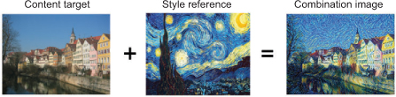
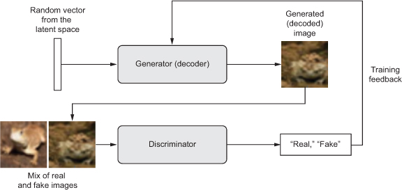

This chapter covers
The potential of artificial intelligence to emulate human thought processes goes beyond passive tasks such as object recognition and mostly reactive tasks such as driving a car. It extends well into creative activities. When I first made the claim that in a not-so-distant future, most of the cultural content that we consume will be created with substantial help from AIs, I was met with utter disbelief, even from long-time machine-learning practitioners. That was in 2014. Fast-forward three years, and the disbelief has receded—at an incredible speed. In the summer of 2015, we were entertained by Google’s DeepDream algorithm turning an image into a psychedelic mess of dog eyes and pareidolic artifacts; in 2016, we used the Prisma application to turn photos into paintings of various styles. In the summer of 2016, an experimental short movie, Sunspring, was directed using a script written by a Long Short-Term Memory (LSTM) algorithm—complete with dialogue. Maybe you’ve recently listened to music that was tentatively generated by a neural network.
Granted, the artistic productions we’ve seen from AI so far have been fairly low quality. AI isn’t anywhere close to rivaling human screenwriters, painters, and composers. But replacing humans was always beside the point: artificial intelligence isn’t about replacing our own intelligence with something else, it’s about bringing into our lives and work more intelligence—intelligence of a different kind. In many fields, but especially in creative ones, AI will be used by humans as a tool to augment their own capabilities: more augmented intelligence than artificial intelligence.
A large part of artistic creation consists of simple pattern recognition and technical skill. And that’s precisely the part of the process that many find less attractive or even dispensable. That’s where AI comes in. Our perceptual modalities, our language, and our artwork all have statistical structure. Learning this structure is what deep-learning algorithms excel at. Machine-learning models can learn the statistical latent space of images, music, and stories, and they can then sample from this space, creating new artworks with characteristics similar to those the model has seen in its training data. Naturally, such sampling is hardly an act of artistic creation in itself. It’s a mere mathematical operation: the algorithm has no grounding in human life, human emotions, or our experience of the world; instead, it learns from an experience that has little in common with ours. It’s only our interpretation, as human spectators, that will give meaning to what the model generates. But in the hands of a skilled artist, algorithmic generation can be steered to become meaningful—and beautiful. Latent space sampling can become a brush that empowers the artist, augments our creative affordances, and expands the space of what we can imagine. What’s more, it can make artistic creation more accessible by eliminating the need for technical skill and practice—setting up a new medium of pure expression, factoring art apart from craft.
Iannis Xenakis, a visionary pioneer of electronic and algorithmic music, beautifully expressed this same idea in the 1960s, in the context of the application of automation technology to music composition:[1]
Iannis Xenakis, “Musiques formelles: nouveaux principes formels de composition musicale,” special issue of La Revue musicale, nos. 253 -254 (1963).
Freed from tedious calculations, the composer is able to devote himself to the general problems that the new musical form poses and to explore the nooks and crannies of this form while modifying the values of the input data. For example, he may test all instrumental combinations from soloists to chamber orchestras, to large orchestras. With the aid of electronic computers the composer becomes a sort of pilot: he presses the buttons, introduces coordinates, and supervises the controls of a cosmic vessel sailing in the space of sound, across sonic constellations and galaxies that he could formerly glimpse only as a distant dream.
In this chapter, we’ll explore from various angles the potential of deep learning to augment artistic creation. We’ll review sequence data generation (which can be used to generate text or music), DeepDream, and image generation using both variational autoencoders and generative adversarial networks. We’ll get your computer to dream up content never seen before; and maybe we’ll get you to dream, too, about the fantastic possibilities that lie at the intersection of technology and art. Let’s get started.
In this section, we’ll explore how recurrent neural networks can be used to generate sequence data. We’ll use text generation as an example, but the exact same techniques can be generalized to any kind of sequence data: you could apply it to sequences of musical notes in order to generate new music, to timeseries of brushstroke data (for example, recorded while an artist paints on an iPad) to generate paintings stroke by stroke, and so on.
Sequence data generation is in no way limited to artistic content generation. It has been successfully applied to speech synthesis and to dialogue generation for chatbots. The Smart Reply feature that Google released in 2016, capable of automatically generating a selection of quick replies to emails or text messages, is powered by similar techniques.
In late 2014, few people had ever seen the initials LSTM, even in the machine-learning community. Successful applications of sequence data generation with recurrent networks only began to appear in the mainstream in 2016. But these techniques have a fairly long history, starting with the development of the LSTM algorithm in 1997.[2] This new algorithm was used early on to generate text character by character.
Sepp Hochreiter and Jürgen Schmidhuber, “Long Short-Term Memory,” Neural Computation 9, no. 8 (1997).
In 2002, Douglas Eck, then at Schmidhuber’s lab in Switzerland, applied LSTM to music generation for the first time, with promising results. Eck is now a researcher at Google Brain, and in 2016 he started a new research group there, called Magenta, focused on applying modern deep-learning techniques to produce engaging music. Sometimes, good ideas take 15 years to get started.
In the late 2000s and early 2010s, Alex Graves did important pioneering work on using recurrent networks for sequence data generation. In particular, his 2013 work on applying recurrent mixture density networks to generate human-like handwriting using timeseries of pen positions is seen by some as a turning point.[3] This specific application of neural networks at that specific moment in time captured for me the notion of machines that dream and was a significant inspiration around the time I started developing Keras. Graves left a similar commented-out remark hidden in a 2013 LaTeX file uploaded to the preprint server arXiv: “generating sequential data is the closest computers get to dreaming.” Several years later, we take a lot of these developments for granted; but at the time, it was difficult to watch Graves’s demonstrations and not walk away awe-inspired by the possibilities.
Alex Graves, “Generating Sequences With Recurrent Neural Networks,” arXiv (2013), https://arxiv.org/abs/1308.0850.
Since then, recurrent neural networks have been successfully used for music generation, dialogue generation, image generation, speech synthesis, and molecule design. They were even used to produce a movie script that was then cast with live actors.
The universal way to generate sequence data in deep learning is to train a network (usually an RNN or a convnet) to predict the next token or next few tokens in a sequence, using the previous tokens as input. For instance, given the input “the cat is on the ma,” the network is trained to predict the target t, the next character. As usual when working with text data, tokens are typically words or characters, and any network that can model the probability of the next token given the previous ones is called a language model. A language model captures the latent space of language: its statistical structure.
Once you have such a trained language model, you can sample from it (generate new sequences): you feed it an initial string of text (called conditioning data), ask it to generate the next character or the next word (you can even generate several tokens at once), add the generated output back to the input data, and repeat the process many times (see figure 8.1). This loop allows you to generate sequences of arbitrary length that reflect the structure of the data on which the model was trained: sequences that look almost like human-written sentences. In the example we present in this section, you’ll take a LSTM layer, feed it strings of N characters extracted from a text corpus, and train it to predict character N + 1. The output of the model will be a softmax over all possible characters: a probability distribution for the next character. This LSTM is called a character-level neural language model.
Figure 8.1. The process of character-by-character text generation using a language model
When generating text, the way you choose the next character is crucially important. A naive approach is greedy sampling, consisting of always choosing the most likely next character. But such an approach results in repetitive, predictable strings that don’t look like coherent language. A more interesting approach makes slightly more surprising choices: it introduces randomness in the sampling process, by sampling from the probability distribution for the next character. This is called stochastic sampling (recall that stochasticity is what we call randomness in this field). In such a setup, if e has a probability 0.3 of being the next character, according to the model, you’ll choose it 30% of the time. Note that greedy sampling can be also cast as sampling from a probability distribution: one where a certain character has probability 1 and all others have probability 0.
Sampling probabilistically from the softmax output of the model is neat: it allows even unlikely characters to be sampled some of the time, generating more interesting-looking sentences and sometimes showing creativity by coming up with new, realistic-sounding words that didn’t occur in the training data. But there’s one issue with this strategy: it doesn’t offer a way to control the amount of randomness in the sampling process.
Why would you want more or less randomness? Consider an extreme case: pure random sampling, where you draw the next character from a uniform probability distribution, and every character is equally likely. This scheme has maximum randomness; in other words, this probability distribution has maximum entropy. Naturally, it won’t produce anything interesting. At the other extreme, greedy sampling doesn’t produce anything interesting, either, and has no randomness: the corresponding probability distribution has minimum entropy. Sampling from the “real” probability distribution—the distribution that is output by the model’s softmax function—constitutes an intermediate point between these two extremes. But there are many other intermediate points of higher or lower entropy that you may want to explore. Less entropy will give the generated sequences a more predictable structure (and thus they will potentially be more realistic looking), whereas more entropy will result in more surprising and creative sequences. When sampling from generative models, it’s always good to explore different amounts of randomness in the generation process. Because we—humans—are the ultimate judges of how interesting the generated data is, interestingness is highly subjective, and there’s no telling in advance where the point of optimal entropy lies.
In order to control the amount of stochasticity in the sampling process, we’ll introduce a parameter called the softmax temperature that characterizes the entropy of the probability distribution used for sampling: it characterizes how surprising or predictable the choice of the next character will be. Given a temperature value, a new probability distribution is computed from the original one (the softmax output of the model) by reweighting it in the following way.
Listing 8.1. Reweighting a probability distribution to a different temperature
import numpy as np def reweight_distribution(original_distribution, temperature=0.5): ❶ distribution = np.log(original_distribution) / temperature distribution = np.exp(distribution) return distribution / np.sum(distribution) ❷
❶ original_distribution is a 1D Numpy array of probability values that must sum to 1. temperature is a factor quantifying the entropy of the output distribution.
❷ Returns a reweighted version of the original distribution. The sum of the distribution may no longer be 1, so you divide it by its sum to obtain the new distribution.
Higher temperatures result in sampling distributions of higher entropy that will generate more surprising and unstructured generated data, whereas a lower temperature will result in less randomness and much more predictable generated data (see figure 8.2).
Figure 8.2. Different reweightings of one probability distribution. Low temperature = more deterministic, high temperature = more random.
Let’s put these ideas into practice in a Keras implementation. The first thing you need is a lot of text data that you can use to learn a language model. You can use any sufficiently large text file or set of text files—Wikipedia, The Lord of the Rings, and so on. In this example, you’ll use some of the writings of Nietzsche, the late-nineteenth century German philosopher (translated into English). The language model you’ll learn will thus be specifically a model of Nietzsche’s writing style and topics of choice, rather than a more generic model of the English language.
Let’s start by downloading the corpus and converting it to lowercase.
Listing 8.2. Downloading and parsing the initial text file
import keras
import numpy as np
path = keras.utils.get_file(
'nietzsche.txt',
origin='https://s3.amazonaws.com/text-datasets/nietzsche.txt')
text = open(path).read().lower()
print('Corpus length:', len(text))
Next, you’ll extract partially overlapping sequences of length maxlen, one-hot encode them, and pack them in a 3D Numpy array x of shape (sequences, maxlen, unique_characters). Simultaneously, you’ll prepare an array y containing the corresponding targets: the one-hot-encoded characters that come after each extracted sequence.
Listing 8.3. Vectorizing sequences of characters
maxlen = 60 ❶ step = 3 ❷ sentences = [] ❸ next_chars = [] ❹ for i in range(0, len(text) - maxlen, step): sentences.append(text[i: i + maxlen]) next_chars.append(text[i + maxlen]) print('Number of sequences:', len(sentences)) chars = sorted(list(set(text))) ❺ print('Unique characters:', len(chars)) char_indices = dict((char, chars.index(char)) for char in chars) ❻ print('Vectorization...') x = np.zeros((len(sentences), maxlen, len(chars)), dtype=np.bool) ❼ y = np.zeros((len(sentences), len(chars)), dtype=np.bool) ❼ for i, sentence in enumerate(sentences): ❼ for t, char in enumerate(sentence): ❼ x[i, t, char_indices[char]] = 1 ❼ y[i, char_indices[next_chars[i]]] = 1 ❼
❶ You’ll extract sequences of 60 characters.
❷ You’ll sample a new sequence every three characters.
❸ Holds the extracted sequences
❹ Holds the targets (the follow-up characters)
❺ List of unique characters in the corpus
❻ Dictionary that maps unique characters to their index in the list “chars”
❼ One-hot encodes the characters into binary arrays
This network is a single LSTM layer followed by a Dense classifier and softmax over all possible characters. But note that recurrent neural networks aren’t the only way to do sequence data generation; 1D convnets also have proven extremely successful at this task in recent times.
Listing 8.4. Single-layer LSTM model for next-character prediction
from keras import layers model = keras.models.Sequential() model.add(layers.LSTM(128, input_shape=(maxlen, len(chars)))) model.add(layers.Dense(len(chars), activation='softmax'))
Because your targets are one-hot encoded, you’ll use categorical_crossentropy as the loss to train the model.
Listing 8.5. Model compilation configuration
optimizer = keras.optimizers.RMSprop(lr=0.01) model.compile(loss='categorical_crossentropy', optimizer=optimizer)
Training the language model and sampling from it
Given a trained model and a seed text snippet, you can generate new text by doing the following repeatedly:
This is the code you use to reweight the original probability distribution coming out of the model and draw a character index from it (the sampling function).
Listing 8.6. Function to sample the next character given the model’s predictions
def sample(preds, temperature=1.0):
preds = np.asarray(preds).astype('float64')
preds = np.log(preds) / temperature
exp_preds = np.exp(preds)
preds = exp_preds / np.sum(exp_preds)
probas = np.random.multinomial(1, preds, 1)
return np.argmax(probas)
Finally, the following loop repeatedly trains and generates text. You begin generating text using a range of different temperatures after every epoch. This allows you to see how the generated text evolves as the model begins to converge, as well as the impact of temperature in the sampling strategy.
Listing 8.7. Text-generation loop
import random import sys for epoch in range(1, 60): ❶ print('epoch', epoch) model.fit(x, y, batch_size=128, epochs=1) ❷ start_index = random.randint(0, len(text) - maxlen - 1) ❸ generated_text = text[start_index: start_index + maxlen] ❸ print('--- Generating with seed: "' + generated_text + '"') ❸ for temperature in [0.2, 0.5, 1.0, 1.2]: ❹ print('------ temperature:', temperature) sys.stdout.write(generated_text) for i in range(400): ❺ sampled = np.zeros((1, maxlen, len(chars))) ❻ for t, char in enumerate(generated_text): ❻ sampled[0, t, char_indices[char]] = 1. ❻ preds = model.predict(sampled, verbose=0)[0] ❼ next_index = sample(preds, temperature) ❼ next_char = chars[next_index] ❼ generated_text += next_char generated_text = generated_text[1:] sys.stdout.write(next_char)
❶ Trains the model for 60 epochs
❷ Fits the model for one iteration on the data
❸ Selects a text seed at random
❹ Tries a range of different sampling temperatures
❺ Generates 400 characters, starting from the seed text
❻ One-hot encodes the characters generated so far
❼ Samples the next character
Here, we used the random seed text “new faculty, and the jubilation reached its climax when kant.” Here’s what you get at epoch 20, long before the model has fully converged, with temperature=0.2:
new faculty, and the jubilation reached its climax when kant and such a man in the same time the spirit of the surely and the such the such as a man is the sunligh and subject the present to the superiority of the special pain the most man and strange the subjection of the special conscience the special and nature and such men the subjection of the special men, the most surely the subjection of the special intellect of the subjection of the same things and
Here’s the result with temperature=0.5:
new faculty, and the jubilation reached its climax when kant in the eterned and such man as it's also become himself the condition of the experience of off the basis the superiory and the special morty of the strength, in the langus, as which the same time life and "even who discless the mankind, with a subject and fact all you have to be the stand and lave no comes a troveration of the man and surely the conscience the superiority, and when one must be w
And here’s what you get with temperature=1.0:
new faculty, and the jubilation reached its climax when kant, as a periliting of manner to all definites and transpects it it so hicable and ont him artiar resull too such as if ever the proping to makes as cnecience. to been juden, all every could coldiciousnike hother aw passife, the plies like which might thiod was account, indifferent germin, that everythery certain destrution, intellect into the deteriorablen origin of moralian, and a lessority o
At epoch 60, the model has mostly converged, and the text starts to look significantly more coherent. Here’s the result with temperature=0.2:
cheerfulness, friendliness and kindness of a heart are the sense of the spirit is a man with the sense of the sense of the world of the self-end and self-concerning the subjection of the strengthorixes--the subjection of the subjection of the subjection of the self-concerning the feelings in the superiority in the subjection of the subjection of the spirit isn't to be a man of the sense of the subjection and said to the strength of the sense of the
Here’s temperature=0.5:
cheerfulness, friendliness and kindness of a heart are the part of the soul who have been the art of the philosophers, and which the one won't say, which is it the higher the and with religion of the frences. the life of the spirit among the most continuess of the strengther of the sense the conscience of men of precisely before enough presumption, and can mankind, and something the conceptions, the subjection of the sense and suffering and the
And here’s temperature=1.0:
cheerfulness, friendliness and kindness of a heart are spiritual by the ciuture for the entalled is, he astraged, or errors to our you idstood--and it needs, to think by spars to whole the amvives of the newoatly, prefectly raals! it was name, for example but voludd atu-especity"--or rank onee, or even all "solett increessic of the world and implussional tragedy experience, transf, or insiderar,--must hast if desires of the strubction is be stronges
As you can see, a low temperature value results in extremely repetitive and predictable text, but local structure is highly realistic: in particular, all words (a word being a local pattern of characters) are real English words. With higher temperatures, the generated text becomes more interesting, surprising, even creative; it sometimes invents completely new words that sound somewhat plausible (such as eterned and troveration). With a high temperature, the local structure starts to break down, and most words look like semi-random strings of characters. Without a doubt, 0.5 is the most interesting temperature for text generation in this specific setup. Always experiment with multiple sampling strategies! A clever balance between learned structure and randomness is what makes generation interesting.
Note that by training a bigger model, longer, on more data, you can achieve generated samples that look much more coherent and realistic than this one. But, of course, don’t expect to ever generate any meaningful text, other than by random chance: all you’re doing is sampling data from a statistical model of which characters come after which characters. Language is a communication channel, and there’s a distinction between what communications are about and the statistical structure of the messages in which communications are encoded. To evidence this distinction, here’s a thought experiment: what if human language did a better job of compressing communications, much like computers do with most digital communications? Language would be no less meaningful, but it would lack any intrinsic statistical structure, thus making it impossible to learn a language model as you just did.
DeepDream is an artistic image-modification technique that uses the representations learned by convolutional neural networks. It was first released by Google in the summer of 2015, as an implementation written using the Caffe deep-learning library (this was several months before the first public release of TensorFlow).[4] It quickly became an internet sensation thanks to the trippy pictures it could generate (see, for example, figure 8.3), full of algorithmic pareidolia artifacts, bird feathers, and dog eyes—a byproduct of the fact that the DeepDream convnet was trained on ImageNet, where dog breeds and bird species are vastly overrepresented.
Alexander Mordvintsev, Christopher Olah, and Mike Tyka, “DeepDream: A Code Example for Visualizing Neural Networks,” Google Research Blog, July 1, 2015, http://mng.bz/xXlM.
Figure 8.3. Example of a DeepDream output image
The DeepDream algorithm is almost identical to the convnet filter-visualization technique introduced in chapter 5, consisting of running a convnet in reverse: doing gradient ascent on the input to the convnet in order to maximize the activation of a specific filter in an upper layer of the convnet. DeepDream uses this same idea, with a few simple differences:
Let’s make some DeepDreams.
You’ll start from a convnet pretrained on ImageNet. In Keras, many such convnets are available: VGG16, VGG19, Xception, ResNet50, and so on. You can implement DeepDream with any of them, but your convnet of choice will naturally affect your visualizations, because different convnet architectures result in different learned features. The convnet used in the original DeepDream release was an Inception model, and in practice Inception is known to produce nice-looking DeepDreams, so you’ll use the Inception V3 model that comes with Keras.
Listing 8.8. Loading the pretrained Inception V3 model
from keras.applications import inception_v3 from keras import backend as K K.set_learning_phase(0) ❶ model = inception_v3.InceptionV3(weights='imagenet', ❷ include_top=False) ❷
❶ You won’t be training the model, so this command disables all training-specific operations.
❷ Builds the Inception V3 network, without its convolutional base. The model will be loaded with pretrained ImageNet weights.
Next, you’ll compute the loss: the quantity you’ll seek to maximize during the gradient-ascent process. In chapter 5, for filter visualization, you tried to maximize the value of a specific filter in a specific layer. Here, you’ll simultaneously maximize the activation of all filters in a number of layers. Specifically, you’ll maximize a weighted sum of the L2 norm of the activations of a set of high-level layers. The exact set of layers you choose (as well as their contribution to the final loss) has a major influence on the visuals you’ll be able to produce, so you want to make these parameters easily configurable. Lower layers result in geometric patterns, whereas higher layers result in visuals in which you can recognize some classes from ImageNet (for example, birds or dogs). You’ll start from a somewhat arbitrary configuration involving four layers—but you’ll definitely want to explore many different configurations later.
Listing 8.9. Setting up the DeepDream configuration
layer_contributions = { ❶
'mixed2': 0.2,
'mixed3': 3.,
'mixed4': 2.,
'mixed5': 1.5,
}
❶ Dictionary mapping layer names to a coefficient quantifying how much the layer’s activation contributes to the loss you’ll seek to maximize. Note that the layer names are hardcoded in the built-in Inception V3 application. You can list all layer names using model.summary().
Now, let’s define a tensor that contains the loss: the weighted sum of the L2 norm of the activations of the layers in listing 8.9.
Listing 8.10. Defining the loss to be maximized
layer_dict = dict([(layer.name, layer) for layer in model.layers]) ❶ loss = K.variable(0.) ❷ for layer_name in layer_contributions: coeff = layer_contributions[layer_name] activation = layer_dict[layer_name].output ❸ scaling = K.prod(K.cast(K.shape(activation), 'float32')) loss += coeff * K.sum(K.square(activation[:, 2: -2, 2: -2, :])) / scaling ❹
❶ Creates a dictionary that maps layer names to layer instances
❷ You’ll define the loss by adding layer contributions to this scalar variable.
❸ Retrieves the layer’s output
❹ Adds the L2 norm of the features of a layer to the loss. You avoid border artifacts by only involving nonborder pixels in the loss.
Next, you can set up the gradient-ascent process.
Listing 8.11. Gradient-ascent process
dream = model.input ❶ grads = K.gradients(loss, dream)[0] ❷ grads /= K.maximum(K.mean(K.abs(grads)), 1e-7) ❸ outputs = [loss, grads] ❹ fetch_loss_and_grads = K.function([dream], outputs) ❹ def eval_loss_and_grads(x): outs = fetch_loss_and_grads([x]) loss_value = outs[0] grad_values = outs[1] return loss_value, grad_values def gradient_ascent(x, iterations, step, max_loss=None): ❺ for i in range(iterations): ❺ loss_value, grad_values = eval_loss_and_grads(x) ❺ if max_loss is not None and loss_value > max_loss: ❺ break ❺ print('...Loss value at', i, ':', loss_value) ❺ x += step * grad_values ❺ return x ❺
❶ This tensor holds the generated image: the dream.
❷ Computes the gradients of the dream with regard to the loss
❸ Normalizes the gradients (important trick)
❹ Sets up a Keras function to retrieve the value of the loss and gradients, given an input image
❺ This function runs gradient ascent for a number of iterations.
Finally: the actual DeepDream algorithm. First, you define a list of scales (also called octaves) at which to process the images. Each successive scale is larger than the previous one by a factor of 1.4 (it’s 40% larger): you start by processing a small image and then increasingly scale it up (see figure 8.4).
Figure 8.4. The DeepDream process: successive scales of spatial processing (octaves) and detail reinjection upon upscaling
For each successive scale, from the smallest to the largest, you run gradient ascent to maximize the loss you previously defined, at that scale. After each gradient ascent run, you upscale the resulting image by 40%.
To avoid losing a lot of image detail after each successive scale-up (resulting in increasingly blurry or pixelated images), you can use a simple trick: after each scale-up, you’ll reinject the lost details back into the image, which is possible because you know what the original image should look like at the larger scale. Given a small image size S and a larger image size L, you can compute the difference between the original image resized to size L and the original resized to size S—this difference quantifies the details lost when going from S to L.
Listing 8.12. Running gradient ascent over different successive scales
import numpy as np step = 0.01 ❶❷ num_octave = 3 ❶❸ octave_scale = 1.4 ❶❹ iterations = 20 ❺ max_loss = 10. ❻ base_image_path = '...' ❼ img = preprocess_image(base_image_path) ❽ original_shape = img.shape[1:3] successive_shapes = [original_shape] ❾ for i in range(1, num_octave): ❾ shape = tuple([int(dim / (octave_scale ** i)) ❾ for dim in original_shape]) ❾ successive_shapes.append(shape) ❾ successive_shapes = successive_shapes[::-1] ❿ original_img = np.copy(img) ⓫ shrunk_original_img = resize_img(img, successive_shapes[0]) ⓫ for shape in successive_shapes: print('Processing image shape', shape) img = resize_img(img, shape) ⓬ img = gradient_ascent(img, iterations=iterations, ⓭ step=step, ⓭ max_loss=max_loss) ⓭ upscaled_shrunk_original_img = resize_img(shrunk_original_img, shape) ⓮ same_size_original = resize_img(original_img, shape) ⓯ lost_detail = same_size_original - upscaled_shrunk_original_img ⓰ img += lost_detail ⓱ shrunk_original_img = resize_img(original_img, shape) save_img(img, fname='dream_at_scale_' + str(shape) + '.png') save_img(img, fname='final_dream.png')
❶ Playing with these hyperparameters will let you achieve new effects.
❷ Gradient ascent step size
❸ Number of scales at which to run gradient ascent
❹ Size ratio between scales
❺ Number of ascent steps to run at each scale
❻ If the loss grows larger than 10, you’ll interrupt the gradient-ascent process to avoid ugly artifacts.
❼ Fill this with the path to the image you want to use.
❽ Loads the base image into a Numpy array (function is defined in listing 8.13)
❾ Prepares a list of shape tuples defining the different scales at which to run gradient ascent
❿ Reverses the list of shapes so they’re in increasing order
⓫ Resizes the Numpy array of the image to the smallest scale
⓬ Scales up the dream image
⓭ Runs gradient ascent, altering the dream
⓮ Scales up the smaller version of the original image: it will be pixellated.
⓯ Computes the high-quality version of the original image at this size
⓰ The difference between the two is the detail that was lost when scaling up.
⓱ Reinjects lost detail into the dream
Note that this code uses the following straightforward auxiliary Numpy functions, which all do as their names suggest. They require that you have SciPy installed.
Listing 8.13. Auxiliary functions
import scipy
from keras.preprocessing import image
def resize_img(img, size):
img = np.copy(img)
factors = (1,
float(size[0]) / img.shape[1],
float(size[1]) / img.shape[2],
1)
return scipy.ndimage.zoom(img, factors, order=1)
def save_img(img, fname):
pil_img = deprocess_image(np.copy(img))
scipy.misc.imsave(fname, pil_img)
def preprocess_image(image_path): ❶
img = image.load_img(image_path)
img = image.img_to_array(img)
img = np.expand_dims(img, axis=0)
img = inception_v3.preprocess_input(img)
return img
def deprocess_image(x): ❷
if K.image_data_format() == 'channels_first':
x = x.reshape((3, x.shape[2], x.shape[3]))
x = x.transpose((1, 2, 0))
else:
x = x.reshape((x.shape[1], x.shape[2], 3)) ❸
x /= 2.
x += 0.5
x *= 255.
x = np.clip(x, 0, 255).astype('uint8')
return x
❶ Util function to open, resize, and format pictures into tensors that Inception V3 can process
❷ Util function to convert a tensor into a valid image
❸ Undoes preprocessing that was performed by inception_v3.preprocess_input
Note
Because the original Inception V3 network was trained to recognize concepts in images of size 299 × 299, and given that the process involves scaling the images down by a reasonable factor, the DeepDream implementation produces much better results on images that are somewhere between 300 × 300 and 400 × 400. Regardless, you can run the same code on images of any size and any ratio.
Starting from a photograph taken in the small hills between San Francisco Bay and the Google campus, we obtained the DeepDream shown in figure 8.5.
Figure 8.5. Running the DeepDream code on an example image
We strongly suggest that you explore what you can do by adjusting which layers you use in your loss. Layers that are lower in the network contain more-local, less-abstract representations and lead to dream patterns that look more geometric. Layers that are higher up lead to more-recognizable visual patterns based on the most common objects found in ImageNet, such as dog eyes, bird feathers, and so on. You can use random generation of the parameters in the layer_contributions dictionary to quickly explore many different layer combinations. Figure 8.6 shows a range of results obtained using different layer configurations, from an image of a delicious homemade pastry.
Figure 8.6. Trying a range of DeepDream configurations on an example image
In addition to DeepDream, another major development in deep-learning-driven image modification is neural style transfer, introduced by Leon Gatys et al. in the summer of 2015.[5] The neural style transfer algorithm has undergone many refinements and spawned many variations since its original introduction, and it has made its way into many smartphone photo apps. For simplicity, this section focuses on the formulation described in the original paper.
Leon A. Gatys, Alexander S. Ecker, and Matthias Bethge, “A Neural Algorithm of Artistic Style,” arXiv (2015), https://arxiv.org/abs/1508.06576.
Neural style transfer consists of applying the style of a reference image to a target image while conserving the content of the target image. Figure 8.7 shows an example.
Figure 8.7. A style transfer example

In this context, style essentially means textures, colors, and visual patterns in the image, at various spatial scales; and the content is the higher-level macrostructure of the image. For instance, blue-and-yellow circular brushstrokes are considered to be the style in figure 8.7 (using Starry Night by Vincent Van Gogh), and the buildings in the Tübingen photograph are considered to be the content.
The idea of style transfer, which is tightly related to that of texture generation, has had a long history in the image-processing community prior to the development of neural style transfer in 2015. But as it turns out, the deep-learning-based implementations of style transfer offer results unparalleled by what had been previously achieved with classical computer-vision techniques, and they triggered an amazing renaissance in creative applications of computer vision.
The key notion behind implementing style transfer is the same idea that’s central to all deep-learning algorithms: you define a loss function to specify what you want to achieve, and you minimize this loss. You know what you want to achieve: conserving the content of the original image while adopting the style of the reference image. If we were able to mathematically define content and style, then an appropriate loss function to minimize would be the following:
loss = distance(style(reference_image) - style(generated_image)) +
distance(content(original_image) - content(generated_image))
Here, distance is a norm function such as the L2 norm, content is a function that takes an image and computes a representation of its content, and style is a function that takes an image and computes a representation of its style. Minimizing this loss causes style(generated_image) to be close to style(reference_image), and content(-generated_image) is close to content(generated_image), thus achieving style transfer as we defined it.
A fundamental observation made by Gatys et al. was that deep convolutional neural networks offer a way to mathematically define the style and content functions. Let’s see how.
As you already know, activations from earlier layers in a network contain local information about the image, whereas activations from higher layers contain increasingly global, abstract information. Formulated in a different way, the activations of the different layers of a convnet provide a decomposition of the contents of an image over different spatial scales. Therefore, you’d expect the content of an image, which is more global and abstract, to be captured by the representations of the upper layers in a convnet.
A good candidate for content loss is thus the L2 norm between the activations of an upper layer in a pretrained convnet, computed over the target image, and the activations of the same layer computed over the generated image. This guarantees that, as seen from the upper layer, the generated image will look similar to the original target image. Assuming that what the upper layers of a convnet see is really the content of their input images, then this works as a way to preserve image content.
The content loss only uses a single upper layer, but the style loss as defined by Gatys et al. uses multiple layers of a convnet: you try to capture the appearance of the style--reference image at all spatial scales extracted by the convnet, not just a single scale. For the style loss, Gatys et al. use the Gram matrix of a layer’s activations: the inner product of the feature maps of a given layer. This inner product can be understood as representing a map of the correlations between the layer’s features. These feature correlations capture the statistics of the patterns of a particular spatial scale, which empirically correspond to the appearance of the textures found at this scale.
Hence, the style loss aims to preserve similar internal correlations within the activations of different layers, across the style-reference image and the generated image. In turn, this guarantees that the textures found at different spatial scales look similar across the style-reference image and the generated image.
In short, you can use a pretrained convnet to define a loss that will do the following:
Now, let’s look at a Keras implementation of the original 2015 neural style transfer algorithm. As you’ll see, it shares many similarities with the DeepDream implementation developed in the previous section.
Neural style transfer can be implemented using any pretrained convnet. Here, you’ll use the VGG19 network used by Gatys et al. VGG19 is a simple variant of the VGG16 network introduced in chapter 5, with three more convolutional layers.
This is the general process:
Let’s start by defining the paths to the style-reference image and the target image. To make sure that the processed images are a similar size (widely different sizes make style transfer more difficult), you’ll later resize them all to a shared height of 400 px.
Listing 8.14. Defining initial variables
from keras.preprocessing.image import load_img, img_to_array target_image_path = 'img/portrait.jpg' ❶ style_reference_image_path = 'img/transfer_style_reference.jpg' ❷ width, height = load_img(target_image_path).size ❸ img_height = 400 ❸ img_width = int(width * img_height / height) ❸
❶ Path to the image you want to transform
❷ Path to the style image
❸ Dimensions of the generated picture
You need some auxiliary functions for loading, preprocessing, and postprocessing the images that go in and out of the VGG19 convnet.
Listing 8.15. Auxiliary functions
import numpy as np
from keras.applications import vgg19
def preprocess_image(image_path):
img = load_img(image_path, target_size=(img_height, img_width))
img = img_to_array(img)
img = np.expand_dims(img, axis=0)
img = vgg19.preprocess_input(img)
return img
def deprocess_image(x):
x[:, :, 0] += 103.939 ❶
x[:, :, 1] += 116.779 ❶
x[:, :, 2] += 123.68 ❶
x = x[:, :, ::-1] ❷
x = np.clip(x, 0, 255).astype('uint8')
return x
❶ Zero-centering by removing the mean pixel value from ImageNet. This reverses a transformation done by vgg19.preprocess_input.
❷ Converts images from 'BGR' to 'RGB'. This is also part of the reversal of vgg19.preprocess_input.
Let’s set up the VGG19 network. It takes as input a batch of three images: the style--reference image, the target image, and a placeholder that will contain the generated image. A placeholder is a symbolic tensor, the values of which are provided externally via Numpy arrays. The style-reference and target image are static and thus defined using K.constant, whereas the values contained in the placeholder of the generated image will change over time.
Listing 8.16. Loading the pretrained VGG19 network and applying it to the three images
from keras import backend as K target_image = K.constant(preprocess_image(target_image_path)) style_reference_image = K.constant(preprocess_image(style_reference_image_path)) combination_image = K.placeholder((1, img_height, img_width, 3)) ❶ input_tensor = K.concatenate([target_image, ❷ style_reference_image, ❷ combination_image], axis=0) ❷ model = vgg19.VGG19(input_tensor=input_tensor, ❸ weights='imagenet', ❸ include_top=False) ❸ print('Model loaded.') ❸
❶ Placeholder that will contain the generated image
❷ Combines the three images in a single batch
❸ Builds the VGG19 network with the batch of three images as input. The model will be loaded with pretrained ImageNet weights.
Let’s define the content loss, which will make sure the top layer of the VGG19 convnet has a similar view of the target image and the generated image.
def content_loss(base, combination):
return K.sum(K.square(combination - base))
Next is the style loss. It uses an auxiliary function to compute the Gram matrix of an input matrix: a map of the correlations found in the original feature matrix.
def gram_matrix(x):
features = K.batch_flatten(K.permute_dimensions(x, (2, 0, 1)))
gram = K.dot(features, K.transpose(features))
return gram
def style_loss(style, combination):
S = gram_matrix(style)
C = gram_matrix(combination)
channels = 3
size = img_height * img_width
return K.sum(K.square(S - C)) / (4. * (channels ** 2) * (size ** 2))
To these two loss components, you add a third: the total variation loss, which operates on the pixels of the generated combination image. It encourages spatial continuity in the generated image, thus avoiding overly pixelated results. You can interpret it as a regularization loss.
Listing 8.19. Total variation loss
def total_variation_loss(x):
a = K.square(
x[:, :img_height - 1, :img_width - 1, :] -
x[:, 1:, :img_width - 1, :])
b = K.square(
x[:, :img_height - 1, :img_width - 1, :] -
x[:, :img_height - 1, 1:, :])
return K.sum(K.pow(a + b, 1.25))
The loss that you minimize is a weighted average of these three losses. To compute the content loss, you use only one upper layer—the block5_conv2 layer—whereas for the style loss, you use a list of layers than spans both low-level and high-level layers. You add the total variation loss at the end.
Depending on the style-reference image and content image you’re using, you’ll likely want to tune the content_weight coefficient (the contribution of the content loss to the total loss). A higher content_weight means the target content will be more recognizable in the generated image.
Listing 8.20. Defining the final loss that you’ll minimize
outputs_dict = dict([(layer.name, layer.output) for layer in model.layers])❶ content_layer = 'block5_conv2' ❷ style_layers = ['block1_conv1', ❸ 'block2_conv1', ❸ 'block3_conv1', ❸ 'block4_conv1', ❸ 'block5_conv1'] ❸ total_variation_weight = 1e-4 ❹ style_weight = 1. ❹ content_weight = 0.025 ❹ loss = K.variable(0.) ❺❻ layer_features = outputs_dict[content_layer] ❻ target_image_features = layer_features[0, :, :, :] ❻ combination_features = layer_features[2, :, :, :] ❻ loss += content_weight * content_loss(target_image_features, ❻ combination_features) ❻ for layer_name in style_layers: ❼ layer_features = outputs_dict[layer_name] style_reference_features = layer_features[1, :, :, :] combination_features = layer_features[2, :, :, :] sl = style_loss(style_reference_features, combination_features) loss += (style_weight / len(style_layers)) * sl loss += total_variation_weight * total_variation_loss(combination_image) ❽
❶ Dictionary that maps layer names to activation tensors
❷ Layer used for content loss
❸ Layers used for style loss
❹ Weights in the weighted average of the loss components
❺ You’ll define the loss by adding all components to this scalar variable.
❻ Adds the content loss
❼ Adds a style loss component for each target layer
❽ Adds the total variation loss
Finally, you’ll set up the gradient-descent process. In the original Gatys et al. paper, optimization is performed using the L-BFGS algorithm, so that’s what you’ll use here. This is a key difference from the DeepDream example in section 8.2. The L-BFGS algorithm comes packaged with SciPy, but there are two slight limitations with the SciPy implementation:
It would be inefficient to compute the value of the loss function and the value of the gradients independently, because doing so would lead to a lot of redundant computation between the two; the process would be almost twice as slow as computing them jointly. To bypass this, you’ll set up a Python class named Evaluator that computes both the loss value and the gradients value at once, returns the loss value when called the first time, and caches the gradients for the next call.
Listing 8.21. Setting up the gradient-descent process
grads = K.gradients(loss, combination_image)[0] ❶ fetch_loss_and_grads = K.function([combination_image], [loss, grads]) ❷ class Evaluator(object): ❸ def __init__(self): self.loss_value = None self.grads_values = None def loss(self, x): assert self.loss_value is None x = x.reshape((1, img_height, img_width, 3)) outs = fetch_loss_and_grads([x]) loss_value = outs[0] grad_values = outs[1].flatten().astype('float64') self.loss_value = loss_value self.grad_values = grad_values return self.loss_value def grads(self, x): assert self.loss_value is not None grad_values = np.copy(self.grad_values) self.loss_value = None self.grad_values = None return grad_values evaluator = Evaluator()
❶ Gets the gradients of the generated image with regard to the loss
❷ Function to fetch the values of the current loss and the current gradients
❸ This class wraps fetch_loss_and_grads in a way that lets you retrieve the losses and gradients via two separate method calls, which is required by the SciPy optimizer you'll use.
Finally, you can run the gradient-ascent process using SciPy’s L-BFGS algorithm, saving the current generated image at each iteration of the algorithm (here, a single iteration represents 20 steps of gradient ascent).
Listing 8.22. Style-transfer loop
from scipy.optimize import fmin_l_bfgs_b from scipy.misc import imsave import time result_prefix = 'my_result' iterations = 20 x = preprocess_image(target_image_path) ❶ x = x.flatten() ❷ for i in range(iterations): print('Start of iteration', i) start_time = time.time() x, min_val, info = fmin_l_bfgs_b(evaluator.loss, ❸ x, ❸ fprime=evaluator.grads, ❸ maxfun=20) ❸ print('Current loss value:', min_val) img = x.copy().reshape((img_height, img_width, 3)) ❹ img = deprocess_image(img) ❹ fname = result_prefix + '_at_iteration_%d.png' % i ❹ imsave(fname, img) ❹ print('Image saved as', fname) ❹ end_time = time.time() ❹ print('Iteration %d completed in %ds' % (i, end_time - start_time))
❶ This is the initial state: the target image.
❷ You flatten the image because scipy.optimize.fmin_l_bfgs_b can only process flat vectors.
❸ Runs L-BFGS optimization over the pixels of the generated image to minimize the neural style loss. Note that you have to pass the function that computes the loss and the function that computes the gradients as two separate arguments.
❹ Saves the current generated image.
Figure 8.8 shows what you get. Keep in mind that what this technique achieves is merely a form of image retexturing, or texture transfer. It works best with style--reference images that are strongly textured and highly self-similar, and with content targets that don’t require high levels of detail in order to be recognizable. It typically can’t achieve fairly abstract feats such as transferring the style of one portrait to another. The algorithm is closer to classical signal processing than to AI, so don’t expect it to work like magic!
Figure 8.8. Some example results
Additionally, note that running this style-transfer algorithm is slow. But the transformation operated by the setup is simple enough that it can be learned by a small, fast feedforward convnet as well—as long as you have appropriate training data available. Fast style transfer can thus be achieved by first spending a lot of compute cycles to generate input-output training examples for a fixed style-reference image, using the method outlined here, and then training a simple convnet to learn this style-specific transformation. Once that’s done, stylizing a given image is instantaneous: it’s just a forward pass of this small convnet.
Sampling from a latent space of images to create entirely new images or edit existing ones is currently the most popular and successful application of creative AI. In this section and the next, we’ll review some high-level concepts pertaining to image generation, alongside implementation details relative to the two main techniques in this domain: variational autoencoders (VAEs) and generative adversarial networks (GANs). The techniques we present here aren’t specific to images—you could develop latent spaces of sound, music, or even text, using GANs and VAEs—but in practice, the most interesting results have been obtained with pictures, and that’s what we focus on here.
The key idea of image generation is to develop a low-dimensional latent space of representations (which naturally is a vector space) where any point can be mapped to a realistic-looking image. The module capable of realizing this mapping, taking as input a latent point and outputting an image (a grid of pixels), is called a generator (in the case of GANs) or a decoder (in the case of VAEs). Once such a latent space has been developed, you can sample points from it, either deliberately or at random, and, by mapping them to image space, generate images that have never been seen before (see figure 8.9).
Figure 8.9. Learning a latent vector space of images, and using it to sample new images
GANs and VAEs are two different strategies for learning such latent spaces of image representations, each with its own characteristics. VAEs are great for learning latent spaces that are well structured, where specific directions encode a meaningful axis of variation in the data. GANs generate images that can potentially be highly realistic, but the latent space they come from may not have as much structure and continuity.
Figure 8.10. A continuous space of faces generated by Tom White using VAEs
We already hinted at the idea of a concept vector when we covered word embeddings in chapter 6. The idea is still the same: given a latent space of representations, or an embedding space, certain directions in the space may encode interesting axes of variation in the original data. In a latent space of images of faces, for instance, there may be a smile vector, such that if latent point z is the embedded representation of a certain face, then latent point z + s is the embedded representation of the same face, smiling. Once you’ve identified such a vector, it then becomes possible to edit images by projecting them into the latent space, moving their representation in a meaningful way, and then decoding them back to image space. There are concept vectors for essentially any independent dimension of variation in image space—in the case of faces, you may discover vectors for adding sunglasses to a face, removing glasses, turning a male face into as female face, and so on. Figure 8.11 is an example of a smile vector, a concept vector discovered by Tom White from the Victoria University School of Design in New Zealand, using VAEs trained on a dataset of faces of celebrities (the CelebA dataset).
Variational autoencoders, simultaneously discovered by Kingma and Welling in December 2013[6] and Rezende, Mohamed, and Wierstra in January 2014,[7] are a kind of generative model that’s especially appropriate for the task of image editing via concept vectors. They’re a modern take on autoencoders—a type of network that aims to encode an input to a low-dimensional latent space and then decode it back—that mixes ideas from deep learning with Bayesian inference.
Diederik P. Kingma and Max Welling, “Auto-Encoding Variational Bayes, arXiv (2013), https://arxiv.org/abs/1312.6114.
Danilo Jimenez Rezende, Shakir Mohamed, and Daan Wierstra, “Stochastic Backpropagation and Approximate Inference in Deep Generative Models,” arXiv (2014), https://arxiv.org/abs/1401.4082.
A classical image autoencoder takes an image, maps it to a latent vector space via an encoder module, and then decodes it back to an output with the same dimensions as the original image, via a decoder module (see figure 8.12). It’s then trained by using as target data the same images as the input images, meaning the autoencoder learns to reconstruct the original inputs. By imposing various constraints on the code (the output of the encoder), you can get the autoencoder to learn more-or-less interesting latent representations of the data. Most commonly, you’ll constrain the code to be low-dimensional and sparse (mostly zeros), in which case the encoder acts as a way to compress the input data into fewer bits of information.
Figure 8.12. An autoencoder: mapping an input x to a compressed representation and then decoding it back as x'

In practice, such classical autoencoders don’t lead to particularly useful or nicely structured latent spaces. They’re not much good at compression, either. For these reasons, they have largely fallen out of fashion. VAEs, however, augment autoencoders with a little bit of statistical magic that forces them to learn continuous, highly structured latent spaces. They have turned out to be a powerful tool for image generation.
A VAE, instead of compressing its input image into a fixed code in the latent space, turns the image into the parameters of a statistical distribution: a mean and a variance. Essentially, this means you’re assuming the input image has been generated by a statistical process, and that the randomness of this process should be taken into account during encoding and decoding. The VAE then uses the mean and variance parameters to randomly sample one element of the distribution, and decodes that element back to the original input (see figure 8.13). The stochasticity of this process improves robustness and forces the latent space to encode meaningful representations everywhere: every point sampled in the latent space is decoded to a valid output.
Figure 8.13. A VAE maps an image to two vectors, z_mean and z_log_sigma, which define a probability distribution over the latent space, used to sample a latent point to decode.
In technical terms, here’s how a VAE works:
Because epsilon is random, the process ensures that every point that’s close to the latent location where you encoded input_img (z-mean) can be decoded to something similar to input_img, thus forcing the latent space to be continuously meaningful. Any two close points in the latent space will decode to highly similar images. Continuity, combined with the low dimensionality of the latent space, forces every direction in the latent space to encode a meaningful axis of variation of the data, making the latent space very structured and thus highly suitable to manipulation via concept vectors.
The parameters of a VAE are trained via two loss functions: a reconstruction loss that forces the decoded samples to match the initial inputs, and a regularization loss that helps learn well-formed latent spaces and reduce overfitting to the training data. Let’s quickly go over a Keras implementation of a VAE. Schematically, it looks like this:
z_mean, z_log_variance = encoder(input_img) ❶ z = z_mean + exp(z_log_variance) * epsilon ❷ reconstructed_img = decoder(z) ❸ model = Model(input_img, reconstructed_img) ❹
❶ Encodes the input into a mean and variance parameter
❷ Draws a latent point using a small random epsilon
❸ Decodes z back to an image
❹ Instantiates the autoencoder model, which maps an input image to its reconstruction
You can then train the model using the reconstruction loss and the regularization loss.
The following listing shows the encoder network you’ll use, mapping images to the parameters of a probability distribution over the latent space. It’s a simple convnet that maps the input image x to two vectors, z_mean and z_log_var.
Listing 8.23. VAE encoder network
import keras from keras import layers from keras import backend as K from keras.models import Model import numpy as np img_shape = (28, 28, 1) batch_size = 16 latent_dim = 2 ❶ input_img = keras.Input(shape=img_shape) x = layers.Conv2D(32, 3, padding='same', activation='relu')(input_img) x = layers.Conv2D(64, 3, padding='same', activation='relu', strides=(2, 2))(x) x = layers.Conv2D(64, 3, padding='same', activation='relu')(x) x = layers.Conv2D(64, 3, padding='same', activation='relu')(x) shape_before_flattening = K.int_shape(x) x = layers.Flatten()(x) x = layers.Dense(32, activation='relu')(x) z_mean = layers.Dense(latent_dim)(x) ❷ z_log_var = layers.Dense(latent_dim)(x) ❷
❶ Dimensionality of the latent space: a 2D plane
❷ The input image ends up being encoded into these two parameters.
Next is the code for using z_mean and z_log_var, the parameters of the statistical distribution assumed to have produced input_img, to generate a latent space point z. Here, you wrap some arbitrary code (built on top of Keras backend primitives) into a Lambda layer. In Keras, everything needs to be a layer, so code that isn’t part of a built-in layer should be wrapped in a Lambda (or in a custom layer).
Listing 8.24. Latent-space-sampling function
def sampling(args):
z_mean, z_log_var = args
epsilon = K.random_normal(shape=(K.shape(z_mean)[0], latent_dim),
mean=0., stddev=1.)
return z_mean + K.exp(z_log_var) * epsilon
z = layers.Lambda(sampling)([z_mean, z_log_var])
The following listing shows the decoder implementation. You reshape the vector z to the dimensions of an image and then use a few convolution layers to obtain a final image output that has the same dimensions as the original input_img.
Listing 8.25. VAE decoder network, mapping latent space points to images
decoder_input = layers.Input(K.int_shape(z)[1:]) ❶ x = layers.Dense(np.prod(shape_before_flattening[1:]), ❷ activation='relu')(decoder_input) ❷ x = layers.Reshape(shape_before_flattening[1:])(x) ❸ x = layers.Conv2DTranspose(32, 3, ❹ padding='same', ❹ activation='relu', ❹ strides=(2, 2))(x) ❹ x = layers.Conv2D(1, 3, ❹ padding='same', ❹ activation='sigmoid')(x) ❹ decoder = Model(decoder_input, x) ❺ z_decoded = decoder(z) ❻
❶ Input where you’ll feed z
❷ Upsamples the input
❸ Reshapes z into a feature map of the same shape as the feature map just before the last Flatten layer in the encoder model
❹ Uses a Conv2DTranspose layer and Conv2D layer to decode z into a feature map the same size as the original image input
❺ Instantiates the decoder model, which turns “decoder_input” into the decoded image
❻ Applies it to z to recover the decoded z
The dual loss of a VAE doesn’t fit the traditional expectation of a sample-wise function of the form loss(input, target). Thus, you’ll set up the loss by writing a custom layer that internally uses the built-in add_loss layer method to create an arbitrary loss.
Listing 8.26. Custom layer used to compute the VAE loss
class CustomVariationalLayer(keras.layers.Layer):
def vae_loss(self, x, z_decoded):
x = K.flatten(x)
z_decoded = K.flatten(z_decoded)
xent_loss = keras.metrics.binary_crossentropy(x, z_decoded)
kl_loss = -5e-4 * K.mean(
1 + z_log_var - K.square(z_mean) - K.exp(z_log_var), axis=-1)
return K.mean(xent_loss + kl_loss)
def call(self, inputs): ❶
x = inputs[0]
z_decoded = inputs[1]
loss = self.vae_loss(x, z_decoded)
self.add_loss(loss, inputs=inputs)
return x ❷
y = CustomVariationalLayer()([input_img, z_decoded]) ❸
❶ You implement custom layers by writing a call method.
❷ You don't use this output, but the layer must return something.
❸ Calls the custom layer on the input and the decoded output to obtain the final model output
Finally, you’re ready to instantiate and train the model. Because the loss is taken care of in the custom layer, you don’t specify an external loss at compile time (loss=None), which in turn means you won’t pass target data during training (as you can see, you only pass x_train to the model in fit).
Listing 8.27. Training the VAE
from keras.datasets import mnist
vae = Model(input_img, y)
vae.compile(optimizer='rmsprop', loss=None)
vae.summary()
(x_train, _), (x_test, y_test) = mnist.load_data()
x_train = x_train.astype('float32') / 255.
x_train = x_train.reshape(x_train.shape + (1,))
x_test = x_test.astype('float32') / 255.
x_test = x_test.reshape(x_test.shape + (1,))
vae.fit(x=x_train, y=None,
shuffle=True,
epochs=10,
batch_size=batch_size,
validation_data=(x_test, None))
Once such a model is trained—on MNIST, in this case—you can use the decoder network to turn arbitrary latent space vectors into images.
Listing 8.28. Sampling a grid of points from the 2D latent space and decoding them to images
import matplotlib.pyplot as plt from scipy.stats import norm n = 15 ❶ digit_size = 28 figure = np.zeros((digit_size * n, digit_size * n)) grid_x = norm.ppf(np.linspace(0.05, 0.95, n)) ❷ grid_y = norm.ppf(np.linspace(0.05, 0.95, n)) ❷ for i, yi in enumerate(grid_x): for j, xi in enumerate(grid_y): z_sample = np.array([[xi, yi]]) z_sample = np.tile(z_sample, batch_size).reshape(batch_size, 2) ❸ x_decoded = decoder.predict(z_sample, batch_size=batch_size) ❹ digit = x_decoded[0].reshape(digit_size, digit_size) ❺ figure[i * digit_size: (i + 1) * digit_size, j * digit_size: (j + 1) * digit_size] = digit plt.figure(figsize=(10, 10)) plt.imshow(figure, cmap='Greys_r') plt.show()
❶ You’ll display a grid of 15 × 15 digits (255 digits total).
❷ Transforms linearly spaced coordinates using the SciPy ppf function to produce values of the latent variable z (because the prior of the latent space is Gaussian)
❸ Repeats z multiple times to form a complete batch
❹ Decodes the batch into digit images
❺ Reshapes the first digit in the batch from 28 × 28 × 1 to 28 × 28
The grid of sampled digits (see figure 8.14) shows a completely continuous distribution of the different digit classes, with one digit morphing into another as you follow a path through latent space. Specific directions in this space have a meaning: for example, there’s a direction for “four-ness,” “one-ness,” and so on.
Figure 8.14. Grid of digits decoded from the latent space
In the next section, we’ll cover in detail the other major tool for generating artificial images: generative adversarial networks (GANs).
Most successful practical applications I have seen with images rely on VAEs, but GANs are extremely popular in the world of academic research—at least, circa 2016–2017. You’ll find out how they work and how to implement one in the next section.
Tip
To play further with image generation, I suggest working with the Large-scale Celeb Faces Attributes (CelebA) dataset. It’s a free-to-download image dataset containing more than 200,000 celebrity portraits. It’s great for experimenting with concept vectors in particular—it definitely beats MNIST.
Generative adversarial networks (GANs), introduced in 2014 by Goodfellow et al.,[8] are an alternative to VAEs for learning latent spaces of images. They enable the generation of fairly realistic synthetic images by forcing the generated images to be statistically almost indistinguishable from real ones.
Ian Goodfellow et al., “Generative Adversarial Networks,” arXiv (2014), https://arxiv.org/abs/1406.2661.
An intuitive way to understand GANs is to imagine a forger trying to create a fake Picasso painting. At first, the forger is pretty bad at the task. He mixes some of his fakes with authentic Picassos and shows them all to an art dealer. The art dealer makes an authenticity assessment for each painting and gives the forger feedback about what makes a Picasso look like a Picasso. The forger goes back to his studio to prepare some new fakes. As times goes on, the forger becomes increasingly competent at imitating the style of Picasso, and the art dealer becomes increasingly expert at spotting fakes. In the end, they have on their hands some excellent fake Picassos.
That’s what a GAN is: a forger network and an expert network, each being trained to best the other. As such, a GAN is made of two parts:
The generator network is trained to be able to fool the discriminator network, and thus it evolves toward generating increasingly realistic images as training goes on: artificial images that look indistinguishable from real ones, to the extent that it’s impossible for the discriminator network to tell the two apart (see figure 8.15). Meanwhile, the discriminator is constantly adapting to the gradually improving capabilities of the generator, setting a high bar of realism for the generated images. Once training is over, the generator is capable of turning any point in its input space into a believable image. Unlike VAEs, this latent space has fewer explicit guarantees of meaningful structure; in particular, it isn’t continuous.
Figure 8.15. A generator transforms random latent vectors into images, and a discriminator seeks to tell real images from generated ones. The generator is trained to fool the discriminator.

Remarkably, a GAN is a system where the optimization minimum isn’t fixed, unlike in any other training setup you’ve encountered in this book. Normally, gradient descent consists of rolling down hills in a static loss landscape. But with a GAN, every step taken down the hill changes the entire landscape a little. It’s a dynamic system where the optimization process is seeking not a minimum, but an equilibrium between two forces. For this reason, GANs are notoriously difficult to train—getting a GAN to work requires lots of careful tuning of the model architecture and training parameters.
Figure 8.16. Latent space dwellers. Images generated by Mike Tyka using a multistaged GAN trained on a dataset of faces (www.miketyka.com).
In this section, we’ll explain how to implement a GAN in Keras, in its barest form—because GANs are advanced, diving deeply into the technical details would be out of scope for this book. The specific implementation is a deep convolutional GAN (DCGAN): a GAN where the generator and discriminator are deep convnets. In particular, it uses a Conv2DTranspose layer for image upsampling in the generator.
You’ll train the GAN on images from CIFAR10, a dataset of 50,000 32 × 32 RGB images belonging to 10 classes (5,000 images per class). To make things easier, you’ll only use images belonging to the class “frog.”
Schematically, the GAN looks like this:
The process of training GANs and tuning GAN implementations is notoriously difficult. There are a number of known tricks you should keep in mind. Like most things in deep learning, it’s more alchemy than science: these tricks are heuristics, not theory-backed guidelines. They’re supported by a level of intuitive understanding of the phenomenon at hand, and they’re known to work well empirically, although not necessarily in every context.
Here are a few of the tricks used in the implementation of the GAN generator and discriminator in this section. It isn’t an exhaustive list of GAN-related tips; you’ll find many more across the GAN literature:
Figure 8.17. Checkerboard artifacts caused by mismatching strides and kernel sizes, resulting in unequal pixel-space coverage: one of the many gotchas of GANs
First, let’s develop a generator model that turns a vector (from the latent space—during training it will be sampled at random) into a candidate image. One of the many issues that commonly arise with GANs is that the generator gets stuck with generated images that look like noise. A possible solution is to use dropout on both the discriminator and the generator.
Listing 8.29. GAN generator network
import keras from keras import layers import numpy as np latent_dim = 32 height = 32 width = 32 channels = 3 generator_input = keras.Input(shape=(latent_dim,)) x = layers.Dense(128 * 16 * 16)(generator_input) ❶ x = layers.LeakyReLU()(x) ❶ x = layers.Reshape((16, 16, 128))(x) ❶ x = layers.Conv2D(256, 5, padding='same')(x) x = layers.LeakyReLU()(x) x = layers.Conv2DTranspose(256, 4, strides=2, padding='same')(x) ❷ x = layers.LeakyReLU()(x) ❷ x = layers.Conv2D(256, 5, padding='same')(x) x = layers.LeakyReLU()(x) x = layers.Conv2D(256, 5, padding='same')(x) x = layers.LeakyReLU()(x) x = layers.Conv2D(channels, 7, activation='tanh', padding='same')(x) ❸ generator = keras.models.Model(generator_input, x) ❸❹ generator.summary() ❸
❶ Transforms the input into a 16 × 16 128-channel feature map
❷ Upsamples to 32 × 32
❸ Produces a 32 × 32 1-channel feature map (shape of a CIFAR10 image)
❹ Instantiates the generator model, which maps the input of shape (latent_dim,) into an image of shape (32, 32, 3)
Next, you’ll develop a discriminator model that takes as input a candidate image (real or synthetic) and classifies it into one of two classes: “generated image” or “real image that comes from the training set.”
Listing 8.30. The GAN discriminator network
discriminator_input = layers.Input(shape=(height, width, channels)) x = layers.Conv2D(128, 3)(discriminator_input) x = layers.LeakyReLU()(x) x = layers.Conv2D(128, 4, strides=2)(x) x = layers.LeakyReLU()(x) x = layers.Conv2D(128, 4, strides=2)(x) x = layers.LeakyReLU()(x) x = layers.Conv2D(128, 4, strides=2)(x) x = layers.LeakyReLU()(x) x = layers.Flatten()(x) x = layers.Dropout(0.4)(x) ❶ x = layers.Dense(1, activation='sigmoid')(x) ❷ discriminator = keras.models.Model(discriminator_input, x) ❸ discriminator.summary() discriminator_optimizer = keras.optimizers.RMSprop( lr=0.0008, clipvalue=1.0, ❹ decay=1e-8) ❺ discriminator.compile(optimizer=discriminator_optimizer, loss='binary_crossentropy')
❶ One dropout layer: an important trick!
❷ Classification layer
❸ Instantiates the discrim-inator model, which turns a (32, 32, 3) input into a binary classification decision (fake/real)
❹ Uses gradient clipping (by value) in the optimizer
❺ To stabilize training, uses learning-rate decay
Finally, you’ll set up the GAN, which chains the generator and the discriminator. When trained, this model will move the generator in a direction that improves its ability to fool the discriminator. This model turns latent-space points into a classification decision—“fake” or “real”—and it’s meant to be trained with labels that are always “these are real images.” So, training gan will update the weights of generator in a way that makes discriminator more likely to predict “real” when looking at fake images. It’s very important to note that you set the discriminator to be frozen during training (non-trainable): its weights won’t be updated when training gan. If the discriminator weights could be updated during this process, then you’d be training the discriminator to always predict “real,” which isn’t what you want!
Listing 8.31. Adversarial network
discriminator.trainable = False ❶
gan_input = keras.Input(shape=(latent_dim,))
gan_output = discriminator(generator(gan_input))
gan = keras.models.Model(gan_input, gan_output)
gan_optimizer = keras.optimizers.RMSprop(lr=0.0004, clipvalue=1.0, decay=1e-8)
gan.compile(optimizer=gan_optimizer, loss='binary_crossentropy')
❶ Sets discriminator weights to non-trainable (this will only apply to the gan model)
Now you can begin training. To recapitulate, this is what the training loop looks like schematically. For each epoch, you do the following:
Let’s implement it.
Listing 8.32. Implementing GAN training
import os from keras.preprocessing import image (x_train, y_train), (_, _) = keras.datasets.cifar10.load_data() ❶ x_train = x_train[y_train.flatten() == 6] ❷ x_train = x_train.reshape( (x_train.shape[0],) + ❸ (height, width, channels)).astype('float32') / 255. ❸ iterations = 10000 batch_size = 20 save_dir = 'your_dir' ❹ start = 0 for step in range(iterations): random_latent_vectors = np.random.normal(size=(batch_size, ❺ latent_dim)) ❺ generated_images = generator.predict(random_latent_vectors) ❻ stop = start + batch_size ❼ real_images = x_train[start: stop] ❼ combined_images = np.concatenate([generated_images, real_images]) ❼ labels = np.concatenate([np.ones((batch_size, 1)), ❽ np.zeros((batch_size, 1))]) ❽ labels += 0.05 * np.random.random(labels.shape) ❾ d_loss = discriminator.train_on_batch(combined_images, labels) ❿ random_latent_vectors = np.random.normal(size=(batch_size, ⓫ latent_dim)) ⓫ misleading_targets = np.zeros((batch_size, 1)) ⓬ a_loss = gan.train_on_batch(random_latent_vectors, ⓭ misleading_targets) ⓭ start += batch_size if start > len(x_train) - batch_size: start = 0 if step % 100 == 0: ⓮ gan.save_weights('gan.h5') ⓯ print('discriminator loss:', d_loss) ⓰ print('adversarial loss:', a_loss) ⓰ img = image.array_to_img(generated_images[0] * 255., scale=False) ⓱ img.save(os.path.join(save_dir, ⓱ 'generated_frog' + str(step) + '.png')) ⓱ img = image.array_to_img(real_images[0] * 255., scale=False) ⓲ img.save(os.path.join(save_dir, ⓲ 'real_frog' + str(step) + '.png')) ⓲
❶ Loads CIFAR10 data
❷ Selects frog images (class 6)
❸ Normalizes data
❹ Specifies where you want to save generated images
❺ Samples random points in the latent space
❻ Decodes them to fake images
❼ Combines them with real images
❽ Assembles labels, discrim-inating real from fake images
❾ Adds random noise to the labels—an important trick!
❿ Trains the discriminator
⓫ Samples random points in the latent space
⓬ Assembles labels that say “these are all real images” (it’s a lie!)
⓭ Trains the generator (via the gan model, where the discrim-inator weights are frozen)
⓮ Occasionally saves and plots (every 100 steps)
⓯ Saves model weights
⓰ Prints metrics
⓱ Saves one generated image
⓲ Saves one real image for comparison
When training, you may see the adversarial loss begin to increase considerably, while the discriminative loss tends to zero—the discriminator may end up dominating the generator. If that’s the case, try reducing the discriminator learning rate, and increase the dropout rate of the discriminator.
Figure 8.18. Play the discriminator: In each column, two images were dreamed up by the GAN, and one image comes from the training set. Can you tell them apart? (Answers: the real images in each column are middle, top, bottom, middle.)